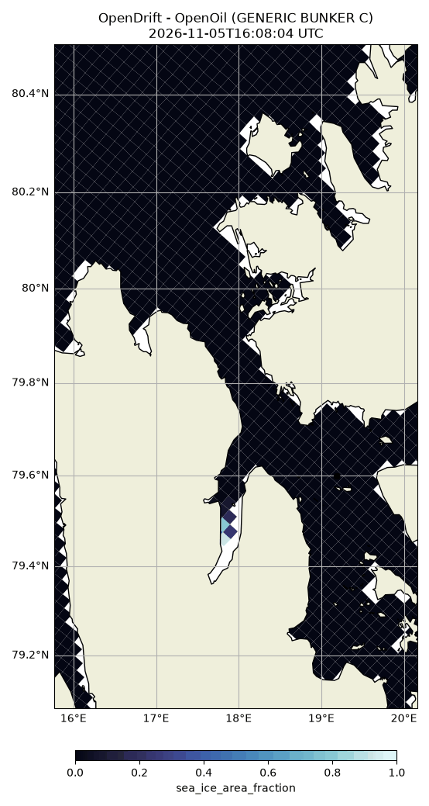

Note
Go to the end to download the full example code.
Oil in ice
13:25:43 INFO opendrift:579: OpenDriftSimulation initialised (version 1.14.11 / v1.14.12-93-gcc8f52e)
Using live data from Barents 2.5 km ocean model
o.add_readers_from_list(['https://thredds.met.no/thredds/dodsC/fou-hi/barents_eps_zdepth_be'])
Adjusting some configuration
o.set_config('processes:dispersion', False)
o.set_config('processes:evaporation', False)
o.set_config('processes:emulsification', False)
o.set_config('environment:constant:horizontal_diffusivity', 10)
o.set_config('drift:truncate_ocean_model_below_m', 3)
Imaginary oil spill in Hinlopen strait
o.seed_elements(lon=19.1909, lat=79.5986, radius=50,
number=3000, time=datetime.now() - timedelta(days=7))
13:25:43 INFO opendrift.models.openoil.openoil:1720: Oil type not specified, using default: GENERIC BUNKER C
13:25:43 INFO opendrift.models.openoil.adios.dirjs:86: Querying ADIOS database for oil: GENERIC BUNKER C
13:25:43 INFO opendrift.models.openoil.openoil:1731: Using density 988.1 and viscosity 0.021692333877975332 of oiltype GENERIC BUNKER C
13:25:43 INFO opendrift.models.basemodel.environment:204: Adding a global landmask from GSHHG
13:25:49 INFO opendrift.models.basemodel.environment:238: Fallback values will be used for the following variables which have no readers:
13:25:49 INFO opendrift.models.basemodel.environment:241: sea_surface_height: 0.000000
13:25:49 INFO opendrift.models.basemodel.environment:241: upward_sea_water_velocity: 0.000000
13:25:49 INFO opendrift.models.basemodel.environment:241: sea_surface_wave_significant_height: 0.000000
13:25:49 INFO opendrift.models.basemodel.environment:241: sea_surface_wave_stokes_drift_x_velocity: 0.000000
13:25:49 INFO opendrift.models.basemodel.environment:241: sea_surface_wave_stokes_drift_y_velocity: 0.000000
13:25:49 INFO opendrift.models.basemodel.environment:241: sea_surface_wave_period_at_variance_spectral_density_maximum: 0.000000
13:25:49 INFO opendrift.models.basemodel.environment:241: sea_surface_wave_mean_period_from_variance_spectral_density_second_frequency_moment: 0.000000
13:25:49 INFO opendrift.models.basemodel.environment:241: sea_ice_area_fraction: 0.000000
13:25:49 INFO opendrift.models.basemodel.environment:241: sea_ice_x_velocity: 0.000000
13:25:49 INFO opendrift.models.basemodel.environment:241: sea_ice_y_velocity: 0.000000
13:25:49 INFO opendrift.models.basemodel.environment:241: sea_water_temperature: 10.000000
13:25:49 INFO opendrift.models.basemodel.environment:241: sea_water_salinity: 34.000000
13:25:49 INFO opendrift.models.basemodel.environment:241: sea_floor_depth_below_sea_level: 10000.000000
13:25:49 INFO opendrift.models.basemodel.environment:241: ocean_vertical_diffusivity: 0.020000
13:25:49 INFO opendrift.models.basemodel.environment:241: ocean_mixed_layer_thickness: 50.000000
Running model
o.run(duration=timedelta(hours=48), time_step=1800, time_step_output=3600)
13:25:49 INFO opendrift:1921: Skipping environment variable upward_sea_water_velocity because of condition ['drift:vertical_advection', 'is', False]
13:25:49 INFO opendrift:1932: Storing previous values of element property lon because of condition (('general:coastline_action', 'in', ['stranding', 'previous']), 'or', ('general:seafloor_action', 'in', ['previous']))
13:25:49 INFO opendrift:1932: Storing previous values of element property lat because of condition (('general:coastline_action', 'in', ['stranding', 'previous']), 'or', ('general:seafloor_action', 'in', ['previous']))
13:25:50 INFO opendrift:968: Using existing reader for land_binary_mask to move elements to ocean
13:25:50 INFO opendrift:1000: All points are in ocean
13:25:50 INFO opendrift.models.openoil.openoil:697: Oil-water surface tension is 0.035935 Nm
13:25:50 INFO opendrift.models.openoil.openoil:710: Max water fraction not available for GENERIC BUNKER C, using default
13:25:50 INFO opendrift:2248: 2026-11-10 13:25:43.663489 - step 1 of 96 - 3000 active elements (0 deactivated)
13:25:50 INFO opendrift.readers:67: Opening file with xr.open_dataset
13:25:52 INFO opendrift.readers.reader_netCDF_CF_generic:340: Detected dimensions: {'x': 'X', 'y': 'Y', 'z': 'depth', 'time': 'time'}
13:25:52 INFO opendrift.readers.basereader:175: Variable x_sea_water_velocity will be rotated from eastward_sea_water_velocity
13:25:52 INFO opendrift.readers.basereader:175: Variable y_sea_water_velocity will be rotated from northward_sea_water_velocity
13:25:55 WARNING opendrift.readers.basereader.variables:685: Invalid values (-0.010526483 to -0.00495848) found for ocean_vertical_diffusivity, replacing with NaN
13:25:55 WARNING opendrift.readers.basereader.variables:688: (allowed range: [0, 1])
13:25:59 WARNING opendrift.readers.basereader.variables:685: Invalid values (-0.004852946 to -0.0026316375) found for ocean_vertical_diffusivity, replacing with NaN
13:25:59 WARNING opendrift.readers.basereader.variables:688: (allowed range: [0, 1])
13:25:59 WARNING opendrift.readers.interpolation.interpolators:126: Only NaNs input to linearNDFast - returning
13:25:59 WARNING opendrift.readers.interpolation.interpolators:126: Only NaNs input to linearNDFast - returning
13:25:59 INFO opendrift:2248: 2026-11-10 13:55:43.663489 - step 2 of 96 - 3000 active elements (0 deactivated)
13:25:59 WARNING opendrift.readers.interpolation.interpolators:126: Only NaNs input to linearNDFast - returning
13:25:59 WARNING opendrift.readers.interpolation.interpolators:126: Only NaNs input to linearNDFast - returning
13:25:59 INFO opendrift:2248: 2026-11-10 14:25:43.663489 - step 3 of 96 - 3000 active elements (0 deactivated)
13:26:02 WARNING opendrift.readers.basereader.variables:685: Invalid values (-0.00155971 to -1.6397087e-05) found for ocean_vertical_diffusivity, replacing with NaN
13:26:02 WARNING opendrift.readers.basereader.variables:688: (allowed range: [0, 1])
13:26:02 WARNING opendrift.readers.interpolation.interpolators:126: Only NaNs input to linearNDFast - returning
13:26:02 INFO opendrift:2248: 2026-11-10 14:55:43.663489 - step 4 of 96 - 2999 active elements (1 deactivated)
13:26:02 WARNING opendrift.readers.interpolation.interpolators:126: Only NaNs input to linearNDFast - returning
13:26:02 INFO opendrift:2248: 2026-11-10 15:25:43.663489 - step 5 of 96 - 2042 active elements (958 deactivated)
13:26:05 WARNING opendrift.readers.basereader.variables:685: Invalid values (-0.0006914063 to -2.9509365e-05) found for ocean_vertical_diffusivity, replacing with NaN
13:26:05 WARNING opendrift.readers.basereader.variables:688: (allowed range: [0, 1])
13:26:06 INFO opendrift:2248: 2026-11-10 15:55:43.663489 - step 6 of 96 - 1804 active elements (1196 deactivated)
13:26:06 INFO opendrift:2248: 2026-11-10 16:25:43.663489 - step 7 of 96 - 1802 active elements (1198 deactivated)
13:26:10 WARNING opendrift.readers.basereader.variables:685: Invalid values (-0.0026046147 to -0.00014629315) found for ocean_vertical_diffusivity, replacing with NaN
13:26:10 WARNING opendrift.readers.basereader.variables:688: (allowed range: [0, 1])
13:26:10 WARNING opendrift.readers.interpolation.interpolators:126: Only NaNs input to linearNDFast - returning
13:26:10 INFO opendrift:2248: 2026-11-10 16:55:43.663489 - step 8 of 96 - 1801 active elements (1199 deactivated)
13:26:10 WARNING opendrift.readers.interpolation.interpolators:126: Only NaNs input to linearNDFast - returning
13:26:10 INFO opendrift:2248: 2026-11-10 17:25:43.663489 - step 9 of 96 - 1801 active elements (1199 deactivated)
13:26:13 WARNING opendrift.readers.basereader.variables:685: Invalid values (-0.006474145 to -0.0033734348) found for ocean_vertical_diffusivity, replacing with NaN
13:26:13 WARNING opendrift.readers.basereader.variables:688: (allowed range: [0, 1])
13:26:13 WARNING opendrift.readers.interpolation.interpolators:126: Only NaNs input to linearNDFast - returning
13:26:13 WARNING opendrift.readers.interpolation.interpolators:126: Only NaNs input to linearNDFast - returning
13:26:13 INFO opendrift:2248: 2026-11-10 17:55:43.663489 - step 10 of 96 - 1801 active elements (1199 deactivated)
13:26:13 WARNING opendrift.readers.interpolation.interpolators:126: Only NaNs input to linearNDFast - returning
13:26:13 WARNING opendrift.readers.interpolation.interpolators:126: Only NaNs input to linearNDFast - returning
13:26:13 INFO opendrift:2248: 2026-11-10 18:25:43.663489 - step 11 of 96 - 1801 active elements (1199 deactivated)
13:26:16 WARNING opendrift.readers.basereader.variables:685: Invalid values (-0.010099445 to -0.004992208) found for ocean_vertical_diffusivity, replacing with NaN
13:26:16 WARNING opendrift.readers.basereader.variables:688: (allowed range: [0, 1])
13:26:16 WARNING opendrift.readers.interpolation.interpolators:126: Only NaNs input to linearNDFast - returning
13:26:16 WARNING opendrift.readers.interpolation.interpolators:126: Only NaNs input to linearNDFast - returning
13:26:16 INFO opendrift:2248: 2026-11-10 18:55:43.663489 - step 12 of 96 - 1801 active elements (1199 deactivated)
13:26:16 WARNING opendrift.readers.interpolation.interpolators:126: Only NaNs input to linearNDFast - returning
13:26:16 WARNING opendrift.readers.interpolation.interpolators:126: Only NaNs input to linearNDFast - returning
13:26:16 INFO opendrift:2248: 2026-11-10 19:25:43.663489 - step 13 of 96 - 1801 active elements (1199 deactivated)
13:26:20 WARNING opendrift.readers.basereader.variables:685: Invalid values (-0.014980538 to -0.0071722353) found for ocean_vertical_diffusivity, replacing with NaN
13:26:20 WARNING opendrift.readers.basereader.variables:688: (allowed range: [0, 1])
13:26:20 WARNING opendrift.readers.interpolation.interpolators:126: Only NaNs input to linearNDFast - returning
13:26:20 WARNING opendrift.readers.interpolation.interpolators:126: Only NaNs input to linearNDFast - returning
13:26:20 INFO opendrift:2248: 2026-11-10 19:55:43.663489 - step 14 of 96 - 1801 active elements (1199 deactivated)
13:26:20 WARNING opendrift.readers.interpolation.interpolators:126: Only NaNs input to linearNDFast - returning
13:26:20 WARNING opendrift.readers.interpolation.interpolators:126: Only NaNs input to linearNDFast - returning
13:26:20 INFO opendrift:2248: 2026-11-10 20:25:43.663489 - step 15 of 96 - 1801 active elements (1199 deactivated)
13:26:23 WARNING opendrift.readers.basereader.variables:685: Invalid values (-0.020081395 to -0.009047277) found for ocean_vertical_diffusivity, replacing with NaN
13:26:23 WARNING opendrift.readers.basereader.variables:688: (allowed range: [0, 1])
13:26:23 WARNING opendrift.readers.interpolation.interpolators:126: Only NaNs input to linearNDFast - returning
13:26:23 WARNING opendrift.readers.interpolation.interpolators:126: Only NaNs input to linearNDFast - returning
13:26:23 INFO opendrift:2248: 2026-11-10 20:55:43.663489 - step 16 of 96 - 1801 active elements (1199 deactivated)
13:26:23 WARNING opendrift.readers.interpolation.interpolators:126: Only NaNs input to linearNDFast - returning
13:26:23 WARNING opendrift.readers.interpolation.interpolators:126: Only NaNs input to linearNDFast - returning
13:26:23 INFO opendrift:2248: 2026-11-10 21:25:43.663489 - step 17 of 96 - 1801 active elements (1199 deactivated)
13:26:26 WARNING opendrift.readers.basereader.variables:685: Invalid values (-0.023191035 to -0.009181083) found for ocean_vertical_diffusivity, replacing with NaN
13:26:26 WARNING opendrift.readers.basereader.variables:688: (allowed range: [0, 1])
13:26:26 WARNING opendrift.readers.interpolation.interpolators:126: Only NaNs input to linearNDFast - returning
13:26:26 WARNING opendrift.readers.interpolation.interpolators:126: Only NaNs input to linearNDFast - returning
13:26:26 INFO opendrift:2248: 2026-11-10 21:55:43.663489 - step 18 of 96 - 1801 active elements (1199 deactivated)
13:26:26 WARNING opendrift.readers.interpolation.interpolators:126: Only NaNs input to linearNDFast - returning
13:26:27 WARNING opendrift.readers.interpolation.interpolators:126: Only NaNs input to linearNDFast - returning
13:26:27 INFO opendrift:2248: 2026-11-10 22:25:43.663489 - step 19 of 96 - 1801 active elements (1199 deactivated)
13:26:30 WARNING opendrift.readers.basereader.variables:685: Invalid values (-0.022170473 to -0.008820841) found for ocean_vertical_diffusivity, replacing with NaN
13:26:30 WARNING opendrift.readers.basereader.variables:688: (allowed range: [0, 1])
13:26:30 WARNING opendrift.readers.interpolation.interpolators:126: Only NaNs input to linearNDFast - returning
13:26:30 WARNING opendrift.readers.interpolation.interpolators:126: Only NaNs input to linearNDFast - returning
13:26:30 INFO opendrift:2248: 2026-11-10 22:55:43.663489 - step 20 of 96 - 1801 active elements (1199 deactivated)
13:26:30 WARNING opendrift.readers.interpolation.interpolators:126: Only NaNs input to linearNDFast - returning
13:26:30 WARNING opendrift.readers.interpolation.interpolators:126: Only NaNs input to linearNDFast - returning
13:26:30 INFO opendrift:2248: 2026-11-10 23:25:43.663489 - step 21 of 96 - 1800 active elements (1200 deactivated)
13:26:34 WARNING opendrift.readers.basereader.variables:685: Invalid values (-0.01754386 to -0.006629225) found for ocean_vertical_diffusivity, replacing with NaN
13:26:34 WARNING opendrift.readers.basereader.variables:688: (allowed range: [0, 1])
13:26:34 WARNING opendrift.readers.interpolation.interpolators:126: Only NaNs input to linearNDFast - returning
13:26:34 WARNING opendrift.readers.interpolation.interpolators:126: Only NaNs input to linearNDFast - returning
13:26:34 INFO opendrift:2248: 2026-11-10 23:55:43.663489 - step 22 of 96 - 1799 active elements (1201 deactivated)
13:26:34 WARNING opendrift.readers.interpolation.interpolators:126: Only NaNs input to linearNDFast - returning
13:26:34 WARNING opendrift.readers.interpolation.interpolators:126: Only NaNs input to linearNDFast - returning
13:26:34 INFO opendrift:2248: 2026-11-11 00:25:43.663489 - step 23 of 96 - 1799 active elements (1201 deactivated)
13:26:37 WARNING opendrift.readers.basereader.variables:685: Invalid values (-0.011759999 to -0.004694485) found for ocean_vertical_diffusivity, replacing with NaN
13:26:37 WARNING opendrift.readers.basereader.variables:688: (allowed range: [0, 1])
13:26:37 WARNING opendrift.readers.interpolation.interpolators:126: Only NaNs input to linearNDFast - returning
13:26:37 WARNING opendrift.readers.interpolation.interpolators:126: Only NaNs input to linearNDFast - returning
13:26:37 INFO opendrift:2248: 2026-11-11 00:55:43.663489 - step 24 of 96 - 1797 active elements (1203 deactivated)
13:26:37 WARNING opendrift.readers.interpolation.interpolators:126: Only NaNs input to linearNDFast - returning
13:26:37 WARNING opendrift.readers.interpolation.interpolators:126: Only NaNs input to linearNDFast - returning
13:26:37 INFO opendrift:2248: 2026-11-11 01:25:43.663489 - step 25 of 96 - 1797 active elements (1203 deactivated)
13:26:40 WARNING opendrift.readers.basereader.variables:685: Invalid values (-0.007529071 to -0.0027907789) found for ocean_vertical_diffusivity, replacing with NaN
13:26:40 WARNING opendrift.readers.basereader.variables:688: (allowed range: [0, 1])
13:26:40 WARNING opendrift.readers.interpolation.interpolators:126: Only NaNs input to linearNDFast - returning
13:26:40 WARNING opendrift.readers.interpolation.interpolators:126: Only NaNs input to linearNDFast - returning
13:26:40 INFO opendrift:2248: 2026-11-11 01:55:43.663489 - step 26 of 96 - 1797 active elements (1203 deactivated)
13:26:40 WARNING opendrift.readers.interpolation.interpolators:126: Only NaNs input to linearNDFast - returning
13:26:40 WARNING opendrift.readers.interpolation.interpolators:126: Only NaNs input to linearNDFast - returning
13:26:40 INFO opendrift:2248: 2026-11-11 02:25:43.663489 - step 27 of 96 - 1796 active elements (1204 deactivated)
13:26:43 WARNING opendrift.readers.basereader.variables:685: Invalid values (-0.0039969664 to -0.0013765581) found for ocean_vertical_diffusivity, replacing with NaN
13:26:43 WARNING opendrift.readers.basereader.variables:688: (allowed range: [0, 1])
13:26:43 WARNING opendrift.readers.interpolation.interpolators:126: Only NaNs input to linearNDFast - returning
13:26:43 WARNING opendrift.readers.interpolation.interpolators:126: Only NaNs input to linearNDFast - returning
13:26:43 INFO opendrift:2248: 2026-11-11 02:55:43.663489 - step 28 of 96 - 1796 active elements (1204 deactivated)
13:26:43 WARNING opendrift.readers.interpolation.interpolators:126: Only NaNs input to linearNDFast - returning
13:26:43 WARNING opendrift.readers.interpolation.interpolators:126: Only NaNs input to linearNDFast - returning
13:26:43 INFO opendrift:2248: 2026-11-11 03:25:43.663489 - step 29 of 96 - 1796 active elements (1204 deactivated)
13:26:46 WARNING opendrift.readers.basereader.variables:685: Invalid values (-0.0022837368 to -0.00048525207) found for ocean_vertical_diffusivity, replacing with NaN
13:26:46 WARNING opendrift.readers.basereader.variables:688: (allowed range: [0, 1])
13:26:46 WARNING opendrift.readers.interpolation.interpolators:126: Only NaNs input to linearNDFast - returning
13:26:46 WARNING opendrift.readers.interpolation.interpolators:126: Only NaNs input to linearNDFast - returning
13:26:46 INFO opendrift:2248: 2026-11-11 03:55:43.663489 - step 30 of 96 - 1796 active elements (1204 deactivated)
13:26:46 WARNING opendrift.readers.interpolation.interpolators:126: Only NaNs input to linearNDFast - returning
13:26:46 WARNING opendrift.readers.interpolation.interpolators:126: Only NaNs input to linearNDFast - returning
13:26:46 INFO opendrift:2248: 2026-11-11 04:25:43.663489 - step 31 of 96 - 1796 active elements (1204 deactivated)
13:26:49 WARNING opendrift.readers.basereader.variables:685: Invalid values (-0.0039869333 to -0.00081818516) found for ocean_vertical_diffusivity, replacing with NaN
13:26:49 WARNING opendrift.readers.basereader.variables:688: (allowed range: [0, 1])
13:26:49 WARNING opendrift.readers.interpolation.interpolators:126: Only NaNs input to linearNDFast - returning
13:26:49 WARNING opendrift.readers.interpolation.interpolators:126: Only NaNs input to linearNDFast - returning
13:26:50 INFO opendrift:2248: 2026-11-11 04:55:43.663489 - step 32 of 96 - 1796 active elements (1204 deactivated)
13:26:50 WARNING opendrift.readers.interpolation.interpolators:126: Only NaNs input to linearNDFast - returning
13:26:50 WARNING opendrift.readers.interpolation.interpolators:126: Only NaNs input to linearNDFast - returning
13:26:50 INFO opendrift:2248: 2026-11-11 05:25:43.663489 - step 33 of 96 - 1796 active elements (1204 deactivated)
13:26:53 WARNING opendrift.readers.basereader.variables:685: Invalid values (-0.0077034584 to -0.0027692078) found for ocean_vertical_diffusivity, replacing with NaN
13:26:53 WARNING opendrift.readers.basereader.variables:688: (allowed range: [0, 1])
13:26:53 WARNING opendrift.readers.interpolation.interpolators:126: Only NaNs input to linearNDFast - returning
13:26:53 WARNING opendrift.readers.interpolation.interpolators:126: Only NaNs input to linearNDFast - returning
13:26:53 INFO opendrift:2248: 2026-11-11 05:55:43.663489 - step 34 of 96 - 1796 active elements (1204 deactivated)
13:26:53 WARNING opendrift.readers.interpolation.interpolators:126: Only NaNs input to linearNDFast - returning
13:26:53 WARNING opendrift.readers.interpolation.interpolators:126: Only NaNs input to linearNDFast - returning
13:26:53 INFO opendrift:2248: 2026-11-11 06:25:43.663489 - step 35 of 96 - 1796 active elements (1204 deactivated)
13:26:56 WARNING opendrift.readers.basereader.variables:685: Invalid values (-0.012936165 to -0.005042806) found for ocean_vertical_diffusivity, replacing with NaN
13:26:56 WARNING opendrift.readers.basereader.variables:688: (allowed range: [0, 1])
13:26:56 WARNING opendrift.readers.interpolation.interpolators:126: Only NaNs input to linearNDFast - returning
13:26:56 WARNING opendrift.readers.interpolation.interpolators:126: Only NaNs input to linearNDFast - returning
13:26:56 INFO opendrift:2248: 2026-11-11 06:55:43.663489 - step 36 of 96 - 1796 active elements (1204 deactivated)
13:26:56 WARNING opendrift.readers.interpolation.interpolators:126: Only NaNs input to linearNDFast - returning
13:26:56 WARNING opendrift.readers.interpolation.interpolators:126: Only NaNs input to linearNDFast - returning
13:26:56 INFO opendrift:2248: 2026-11-11 07:25:43.663489 - step 37 of 96 - 1795 active elements (1205 deactivated)
13:26:59 WARNING opendrift.readers.basereader.variables:685: Invalid values (-0.017425496 to -0.0055127856) found for ocean_vertical_diffusivity, replacing with NaN
13:26:59 WARNING opendrift.readers.basereader.variables:688: (allowed range: [0, 1])
13:26:59 WARNING opendrift.readers.interpolation.interpolators:126: Only NaNs input to linearNDFast - returning
13:26:59 WARNING opendrift.readers.interpolation.interpolators:126: Only NaNs input to linearNDFast - returning
13:26:59 INFO opendrift:2248: 2026-11-11 07:55:43.663489 - step 38 of 96 - 1795 active elements (1205 deactivated)
13:26:59 WARNING opendrift.readers.interpolation.interpolators:126: Only NaNs input to linearNDFast - returning
13:26:59 WARNING opendrift.readers.interpolation.interpolators:126: Only NaNs input to linearNDFast - returning
13:26:59 INFO opendrift:2248: 2026-11-11 08:25:43.663489 - step 39 of 96 - 1795 active elements (1205 deactivated)
13:27:02 WARNING opendrift.readers.basereader.variables:685: Invalid values (-0.020553302 to -0.0073417025) found for ocean_vertical_diffusivity, replacing with NaN
13:27:02 WARNING opendrift.readers.basereader.variables:688: (allowed range: [0, 1])
13:27:02 WARNING opendrift.readers.interpolation.interpolators:126: Only NaNs input to linearNDFast - returning
13:27:02 WARNING opendrift.readers.interpolation.interpolators:126: Only NaNs input to linearNDFast - returning
13:27:02 INFO opendrift:2248: 2026-11-11 08:55:43.663489 - step 40 of 96 - 1795 active elements (1205 deactivated)
13:27:02 WARNING opendrift.readers.interpolation.interpolators:126: Only NaNs input to linearNDFast - returning
13:27:02 WARNING opendrift.readers.interpolation.interpolators:126: Only NaNs input to linearNDFast - returning
13:27:02 INFO opendrift:2248: 2026-11-11 09:25:43.663489 - step 41 of 96 - 1795 active elements (1205 deactivated)
13:27:05 WARNING opendrift.readers.basereader.variables:685: Invalid values (-0.023589209 to -0.008061301) found for ocean_vertical_diffusivity, replacing with NaN
13:27:05 WARNING opendrift.readers.basereader.variables:688: (allowed range: [0, 1])
13:27:05 WARNING opendrift.readers.interpolation.interpolators:126: Only NaNs input to linearNDFast - returning
13:27:05 WARNING opendrift.readers.interpolation.interpolators:126: Only NaNs input to linearNDFast - returning
13:27:05 INFO opendrift:2248: 2026-11-11 09:55:43.663489 - step 42 of 96 - 1795 active elements (1205 deactivated)
13:27:05 WARNING opendrift.readers.interpolation.interpolators:126: Only NaNs input to linearNDFast - returning
13:27:05 WARNING opendrift.readers.interpolation.interpolators:126: Only NaNs input to linearNDFast - returning
13:27:05 INFO opendrift:2248: 2026-11-11 10:25:43.663489 - step 43 of 96 - 1795 active elements (1205 deactivated)
13:27:08 WARNING opendrift.readers.basereader.variables:685: Invalid values (-0.023905585 to -0.0064070034) found for ocean_vertical_diffusivity, replacing with NaN
13:27:08 WARNING opendrift.readers.basereader.variables:688: (allowed range: [0, 1])
13:27:08 WARNING opendrift.readers.interpolation.interpolators:126: Only NaNs input to linearNDFast - returning
13:27:08 WARNING opendrift.readers.interpolation.interpolators:126: Only NaNs input to linearNDFast - returning
13:27:08 INFO opendrift:2248: 2026-11-11 10:55:43.663489 - step 44 of 96 - 1795 active elements (1205 deactivated)
13:27:08 WARNING opendrift.readers.interpolation.interpolators:126: Only NaNs input to linearNDFast - returning
13:27:08 WARNING opendrift.readers.interpolation.interpolators:126: Only NaNs input to linearNDFast - returning
13:27:09 INFO opendrift:2248: 2026-11-11 11:25:43.663489 - step 45 of 96 - 1795 active elements (1205 deactivated)
13:27:11 WARNING opendrift.readers.basereader.variables:685: Invalid values (-0.02087458 to -0.005213068) found for ocean_vertical_diffusivity, replacing with NaN
13:27:11 WARNING opendrift.readers.basereader.variables:688: (allowed range: [0, 1])
13:27:11 WARNING opendrift.readers.interpolation.interpolators:126: Only NaNs input to linearNDFast - returning
13:27:11 WARNING opendrift.readers.interpolation.interpolators:126: Only NaNs input to linearNDFast - returning
13:27:11 INFO opendrift:2248: 2026-11-11 11:55:43.663489 - step 46 of 96 - 1795 active elements (1205 deactivated)
13:27:11 WARNING opendrift.readers.interpolation.interpolators:126: Only NaNs input to linearNDFast - returning
13:27:11 WARNING opendrift.readers.interpolation.interpolators:126: Only NaNs input to linearNDFast - returning
13:27:12 INFO opendrift:2248: 2026-11-11 12:25:43.663489 - step 47 of 96 - 1795 active elements (1205 deactivated)
13:27:15 WARNING opendrift.readers.basereader.variables:685: Invalid values (-0.015388858 to -0.0031092456) found for ocean_vertical_diffusivity, replacing with NaN
13:27:15 WARNING opendrift.readers.basereader.variables:688: (allowed range: [0, 1])
13:27:15 WARNING opendrift.readers.interpolation.interpolators:126: Only NaNs input to linearNDFast - returning
13:27:15 WARNING opendrift.readers.interpolation.interpolators:126: Only NaNs input to linearNDFast - returning
13:27:15 INFO opendrift:2248: 2026-11-11 12:55:43.663489 - step 48 of 96 - 1795 active elements (1205 deactivated)
13:27:15 WARNING opendrift.readers.interpolation.interpolators:126: Only NaNs input to linearNDFast - returning
13:27:15 WARNING opendrift.readers.interpolation.interpolators:126: Only NaNs input to linearNDFast - returning
13:27:15 INFO opendrift:2248: 2026-11-11 13:25:43.663489 - step 49 of 96 - 1795 active elements (1205 deactivated)
13:27:18 WARNING opendrift.readers.basereader.variables:685: Invalid values (-0.010946545 to -0.0020909596) found for ocean_vertical_diffusivity, replacing with NaN
13:27:18 WARNING opendrift.readers.basereader.variables:688: (allowed range: [0, 1])
13:27:18 WARNING opendrift.readers.interpolation.interpolators:126: Only NaNs input to linearNDFast - returning
13:27:18 WARNING opendrift.readers.interpolation.interpolators:126: Only NaNs input to linearNDFast - returning
13:27:18 INFO opendrift:2248: 2026-11-11 13:55:43.663489 - step 50 of 96 - 1795 active elements (1205 deactivated)
13:27:18 WARNING opendrift.readers.interpolation.interpolators:126: Only NaNs input to linearNDFast - returning
13:27:18 WARNING opendrift.readers.interpolation.interpolators:126: Only NaNs input to linearNDFast - returning
13:27:18 INFO opendrift:2248: 2026-11-11 14:25:43.663489 - step 51 of 96 - 1792 active elements (1208 deactivated)
13:27:21 WARNING opendrift.readers.basereader.variables:685: Invalid values (-0.007173832 to -0.0009704952) found for ocean_vertical_diffusivity, replacing with NaN
13:27:21 WARNING opendrift.readers.basereader.variables:688: (allowed range: [0, 1])
13:27:21 WARNING opendrift.readers.interpolation.interpolators:126: Only NaNs input to linearNDFast - returning
13:27:21 WARNING opendrift.readers.interpolation.interpolators:126: Only NaNs input to linearNDFast - returning
13:27:21 INFO opendrift:2248: 2026-11-11 14:55:43.663489 - step 52 of 96 - 1786 active elements (1214 deactivated)
13:27:21 WARNING opendrift.readers.interpolation.interpolators:126: Only NaNs input to linearNDFast - returning
13:27:21 WARNING opendrift.readers.interpolation.interpolators:126: Only NaNs input to linearNDFast - returning
13:27:22 INFO opendrift:2248: 2026-11-11 15:25:43.663489 - step 53 of 96 - 1769 active elements (1231 deactivated)
13:27:25 WARNING opendrift.readers.basereader.variables:685: Invalid values (-0.0036487689 to -2.954005e-05) found for ocean_vertical_diffusivity, replacing with NaN
13:27:25 WARNING opendrift.readers.basereader.variables:688: (allowed range: [0, 1])
13:27:25 WARNING opendrift.readers.interpolation.interpolators:126: Only NaNs input to linearNDFast - returning
13:27:25 WARNING opendrift.readers.interpolation.interpolators:137: Still NaN-values after 10 iterations, exiting!
13:27:25 INFO opendrift:2248: 2026-11-11 15:55:43.663489 - step 54 of 96 - 1736 active elements (1264 deactivated)
13:27:25 WARNING opendrift.readers.interpolation.interpolators:126: Only NaNs input to linearNDFast - returning
13:27:25 INFO opendrift:2248: 2026-11-11 16:25:43.663489 - step 55 of 96 - 1704 active elements (1296 deactivated)
13:27:28 WARNING opendrift.readers.basereader.variables:685: Invalid values (-0.0036292432 to -6.9557022e-06) found for ocean_vertical_diffusivity, replacing with NaN
13:27:28 WARNING opendrift.readers.basereader.variables:688: (allowed range: [0, 1])
13:27:28 WARNING opendrift.readers.interpolation.interpolators:137: Still NaN-values after 10 iterations, exiting!
13:27:28 INFO opendrift:2248: 2026-11-11 16:55:43.663489 - step 56 of 96 - 1650 active elements (1350 deactivated)
13:27:28 INFO opendrift:2248: 2026-11-11 17:25:43.663489 - step 57 of 96 - 1593 active elements (1407 deactivated)
13:27:31 WARNING opendrift.readers.basereader.variables:685: Invalid values (-0.0060687484 to -0.00010418557) found for ocean_vertical_diffusivity, replacing with NaN
13:27:31 WARNING opendrift.readers.basereader.variables:688: (allowed range: [0, 1])
13:27:31 WARNING opendrift.readers.interpolation.interpolators:126: Only NaNs input to linearNDFast - returning
13:27:31 INFO opendrift:2248: 2026-11-11 17:55:43.663489 - step 58 of 96 - 1535 active elements (1465 deactivated)
13:27:31 WARNING opendrift.readers.interpolation.interpolators:126: Only NaNs input to linearNDFast - returning
13:27:32 INFO opendrift:2248: 2026-11-11 18:25:43.663489 - step 59 of 96 - 1496 active elements (1504 deactivated)
13:27:35 WARNING opendrift.readers.basereader.variables:685: Invalid values (-0.008939874 to -0.0019491174) found for ocean_vertical_diffusivity, replacing with NaN
13:27:35 WARNING opendrift.readers.basereader.variables:688: (allowed range: [0, 1])
13:27:35 WARNING opendrift.readers.interpolation.interpolators:126: Only NaNs input to linearNDFast - returning
13:27:35 WARNING opendrift.readers.interpolation.interpolators:126: Only NaNs input to linearNDFast - returning
13:27:35 INFO opendrift:2248: 2026-11-11 18:55:43.663489 - step 60 of 96 - 1481 active elements (1519 deactivated)
13:27:35 WARNING opendrift.readers.interpolation.interpolators:126: Only NaNs input to linearNDFast - returning
13:27:35 WARNING opendrift.readers.interpolation.interpolators:126: Only NaNs input to linearNDFast - returning
13:27:35 INFO opendrift:2248: 2026-11-11 19:25:43.663489 - step 61 of 96 - 1476 active elements (1524 deactivated)
13:27:38 WARNING opendrift.readers.basereader.variables:685: Invalid values (-0.011599624 to -0.004090239) found for ocean_vertical_diffusivity, replacing with NaN
13:27:38 WARNING opendrift.readers.basereader.variables:688: (allowed range: [0, 1])
13:27:38 WARNING opendrift.readers.interpolation.interpolators:126: Only NaNs input to linearNDFast - returning
13:27:38 WARNING opendrift.readers.interpolation.interpolators:126: Only NaNs input to linearNDFast - returning
13:27:38 INFO opendrift:2248: 2026-11-11 19:55:43.663489 - step 62 of 96 - 1470 active elements (1530 deactivated)
13:27:38 WARNING opendrift.readers.interpolation.interpolators:126: Only NaNs input to linearNDFast - returning
13:27:38 WARNING opendrift.readers.interpolation.interpolators:126: Only NaNs input to linearNDFast - returning
13:27:38 INFO opendrift:2248: 2026-11-11 20:25:43.663489 - step 63 of 96 - 1466 active elements (1534 deactivated)
13:27:41 WARNING opendrift.readers.basereader.variables:685: Invalid values (-0.014419856 to -0.0044491305) found for ocean_vertical_diffusivity, replacing with NaN
13:27:41 WARNING opendrift.readers.basereader.variables:688: (allowed range: [0, 1])
13:27:41 WARNING opendrift.readers.interpolation.interpolators:126: Only NaNs input to linearNDFast - returning
13:27:41 WARNING opendrift.readers.interpolation.interpolators:126: Only NaNs input to linearNDFast - returning
13:27:41 INFO opendrift:2248: 2026-11-11 20:55:43.663489 - step 64 of 96 - 1465 active elements (1535 deactivated)
13:27:41 WARNING opendrift.readers.interpolation.interpolators:126: Only NaNs input to linearNDFast - returning
13:27:41 WARNING opendrift.readers.interpolation.interpolators:126: Only NaNs input to linearNDFast - returning
13:27:41 INFO opendrift:2248: 2026-11-11 21:25:43.663489 - step 65 of 96 - 1465 active elements (1535 deactivated)
13:27:44 WARNING opendrift.readers.basereader.variables:685: Invalid values (-0.017651118 to -0.0045328457) found for ocean_vertical_diffusivity, replacing with NaN
13:27:44 WARNING opendrift.readers.basereader.variables:688: (allowed range: [0, 1])
13:27:44 WARNING opendrift.readers.interpolation.interpolators:126: Only NaNs input to linearNDFast - returning
13:27:44 WARNING opendrift.readers.interpolation.interpolators:126: Only NaNs input to linearNDFast - returning
13:27:44 INFO opendrift:2248: 2026-11-11 21:55:43.663489 - step 66 of 96 - 1465 active elements (1535 deactivated)
13:27:44 WARNING opendrift.readers.interpolation.interpolators:126: Only NaNs input to linearNDFast - returning
13:27:44 WARNING opendrift.readers.interpolation.interpolators:126: Only NaNs input to linearNDFast - returning
13:27:44 INFO opendrift:2248: 2026-11-11 22:25:43.663489 - step 67 of 96 - 1465 active elements (1535 deactivated)
13:27:47 WARNING opendrift.readers.basereader.variables:685: Invalid values (-0.018304585 to -0.0032146617) found for ocean_vertical_diffusivity, replacing with NaN
13:27:47 WARNING opendrift.readers.basereader.variables:688: (allowed range: [0, 1])
13:27:47 WARNING opendrift.readers.interpolation.interpolators:126: Only NaNs input to linearNDFast - returning
13:27:47 WARNING opendrift.readers.interpolation.interpolators:126: Only NaNs input to linearNDFast - returning
13:27:47 INFO opendrift:2248: 2026-11-11 22:55:43.663489 - step 68 of 96 - 1464 active elements (1536 deactivated)
13:27:47 WARNING opendrift.readers.interpolation.interpolators:126: Only NaNs input to linearNDFast - returning
13:27:47 WARNING opendrift.readers.interpolation.interpolators:126: Only NaNs input to linearNDFast - returning
13:27:48 INFO opendrift:2248: 2026-11-11 23:25:43.663489 - step 69 of 96 - 1463 active elements (1537 deactivated)
13:27:51 WARNING opendrift.readers.basereader.variables:685: Invalid values (-0.01643192 to -0.00071610307) found for ocean_vertical_diffusivity, replacing with NaN
13:27:51 WARNING opendrift.readers.basereader.variables:688: (allowed range: [0, 1])
13:27:51 WARNING opendrift.readers.interpolation.interpolators:126: Only NaNs input to linearNDFast - returning
13:27:51 WARNING opendrift.readers.interpolation.interpolators:126: Only NaNs input to linearNDFast - returning
13:27:51 INFO opendrift:2248: 2026-11-11 23:55:43.663489 - step 70 of 96 - 1459 active elements (1541 deactivated)
13:27:51 WARNING opendrift.readers.interpolation.interpolators:126: Only NaNs input to linearNDFast - returning
13:27:51 WARNING opendrift.readers.interpolation.interpolators:126: Only NaNs input to linearNDFast - returning
13:27:51 INFO opendrift:2248: 2026-11-12 00:25:43.663489 - step 71 of 96 - 1455 active elements (1545 deactivated)
13:27:54 WARNING opendrift.readers.basereader.variables:685: Invalid values (-0.01298499 to -0.00033846905) found for ocean_vertical_diffusivity, replacing with NaN
13:27:54 WARNING opendrift.readers.basereader.variables:688: (allowed range: [0, 1])
13:27:54 WARNING opendrift.readers.interpolation.interpolators:126: Only NaNs input to linearNDFast - returning
13:27:54 WARNING opendrift.readers.interpolation.interpolators:126: Only NaNs input to linearNDFast - returning
13:27:54 INFO opendrift:2248: 2026-11-12 00:55:43.663489 - step 72 of 96 - 1455 active elements (1545 deactivated)
13:27:54 WARNING opendrift.readers.interpolation.interpolators:126: Only NaNs input to linearNDFast - returning
13:27:54 WARNING opendrift.readers.interpolation.interpolators:126: Only NaNs input to linearNDFast - returning
13:27:54 INFO opendrift:2248: 2026-11-12 01:25:43.663489 - step 73 of 96 - 1454 active elements (1546 deactivated)
13:27:57 WARNING opendrift.readers.basereader.variables:685: Invalid values (-0.01100877 to -0.0007419772) found for ocean_vertical_diffusivity, replacing with NaN
13:27:57 WARNING opendrift.readers.basereader.variables:688: (allowed range: [0, 1])
13:27:57 WARNING opendrift.readers.interpolation.interpolators:126: Only NaNs input to linearNDFast - returning
13:27:57 WARNING opendrift.readers.interpolation.interpolators:126: Only NaNs input to linearNDFast - returning
13:27:57 INFO opendrift:2248: 2026-11-12 01:55:43.663489 - step 74 of 96 - 1451 active elements (1549 deactivated)
13:27:57 WARNING opendrift.readers.interpolation.interpolators:126: Only NaNs input to linearNDFast - returning
13:27:57 WARNING opendrift.readers.interpolation.interpolators:126: Only NaNs input to linearNDFast - returning
13:27:57 INFO opendrift:2248: 2026-11-12 02:25:43.663489 - step 75 of 96 - 1450 active elements (1550 deactivated)
13:28:00 WARNING opendrift.readers.basereader.variables:685: Invalid values (-0.006220147 to -0.0002869795) found for ocean_vertical_diffusivity, replacing with NaN
13:28:00 WARNING opendrift.readers.basereader.variables:688: (allowed range: [0, 1])
13:28:00 WARNING opendrift.readers.interpolation.interpolators:126: Only NaNs input to linearNDFast - returning
13:28:00 WARNING opendrift.readers.interpolation.interpolators:126: Only NaNs input to linearNDFast - returning
13:28:00 INFO opendrift:2248: 2026-11-12 02:55:43.663489 - step 76 of 96 - 1447 active elements (1553 deactivated)
13:28:00 WARNING opendrift.readers.interpolation.interpolators:126: Only NaNs input to linearNDFast - returning
13:28:00 WARNING opendrift.readers.interpolation.interpolators:126: Only NaNs input to linearNDFast - returning
13:28:00 INFO opendrift:2248: 2026-11-12 03:25:43.663489 - step 77 of 96 - 1444 active elements (1556 deactivated)
13:28:03 WARNING opendrift.readers.basereader.variables:685: Invalid values (-0.004246218 to -0.00034135688) found for ocean_vertical_diffusivity, replacing with NaN
13:28:03 WARNING opendrift.readers.basereader.variables:688: (allowed range: [0, 1])
13:28:03 WARNING opendrift.readers.interpolation.interpolators:126: Only NaNs input to linearNDFast - returning
13:28:03 WARNING opendrift.readers.interpolation.interpolators:126: Only NaNs input to linearNDFast - returning
13:28:03 INFO opendrift:2248: 2026-11-12 03:55:43.663489 - step 78 of 96 - 1439 active elements (1561 deactivated)
13:28:03 WARNING opendrift.readers.interpolation.interpolators:126: Only NaNs input to linearNDFast - returning
13:28:03 WARNING opendrift.readers.interpolation.interpolators:126: Only NaNs input to linearNDFast - returning
13:28:03 INFO opendrift:2248: 2026-11-12 04:25:43.663489 - step 79 of 96 - 1430 active elements (1570 deactivated)
13:28:06 WARNING opendrift.readers.basereader.variables:685: Invalid values (-0.0030589004 to -0.00020082656) found for ocean_vertical_diffusivity, replacing with NaN
13:28:06 WARNING opendrift.readers.basereader.variables:688: (allowed range: [0, 1])
13:28:06 WARNING opendrift.readers.interpolation.interpolators:126: Only NaNs input to linearNDFast - returning
13:28:06 WARNING opendrift.readers.interpolation.interpolators:126: Only NaNs input to linearNDFast - returning
13:28:07 INFO opendrift:2248: 2026-11-12 04:55:43.663489 - step 80 of 96 - 1417 active elements (1583 deactivated)
13:28:07 WARNING opendrift.readers.interpolation.interpolators:126: Only NaNs input to linearNDFast - returning
13:28:07 WARNING opendrift.readers.interpolation.interpolators:126: Only NaNs input to linearNDFast - returning
13:28:07 INFO opendrift:2248: 2026-11-12 05:25:43.663489 - step 81 of 96 - 1400 active elements (1600 deactivated)
13:28:10 WARNING opendrift.readers.basereader.variables:685: Invalid values (-0.0055782762 to -0.0002977477) found for ocean_vertical_diffusivity, replacing with NaN
13:28:10 WARNING opendrift.readers.basereader.variables:688: (allowed range: [0, 1])
13:28:10 WARNING opendrift.readers.interpolation.interpolators:126: Only NaNs input to linearNDFast - returning
13:28:10 WARNING opendrift.readers.interpolation.interpolators:126: Only NaNs input to linearNDFast - returning
13:28:10 INFO opendrift:2248: 2026-11-12 05:55:43.663489 - step 82 of 96 - 1387 active elements (1613 deactivated)
13:28:10 WARNING opendrift.readers.interpolation.interpolators:126: Only NaNs input to linearNDFast - returning
13:28:10 WARNING opendrift.readers.interpolation.interpolators:126: Only NaNs input to linearNDFast - returning
13:28:10 INFO opendrift:2248: 2026-11-12 06:25:43.663489 - step 83 of 96 - 1360 active elements (1640 deactivated)
13:28:13 WARNING opendrift.readers.basereader.variables:685: Invalid values (-0.009111352 to -0.0005394098) found for ocean_vertical_diffusivity, replacing with NaN
13:28:13 WARNING opendrift.readers.basereader.variables:688: (allowed range: [0, 1])
13:28:13 WARNING opendrift.readers.interpolation.interpolators:126: Only NaNs input to linearNDFast - returning
13:28:13 WARNING opendrift.readers.interpolation.interpolators:126: Only NaNs input to linearNDFast - returning
13:28:13 INFO opendrift:2248: 2026-11-12 06:55:43.663489 - step 84 of 96 - 1323 active elements (1677 deactivated)
13:28:13 WARNING opendrift.readers.interpolation.interpolators:126: Only NaNs input to linearNDFast - returning
13:28:13 WARNING opendrift.readers.interpolation.interpolators:126: Only NaNs input to linearNDFast - returning
13:28:13 INFO opendrift:2248: 2026-11-12 07:25:43.663489 - step 85 of 96 - 1272 active elements (1728 deactivated)
13:28:16 WARNING opendrift.readers.basereader.variables:685: Invalid values (-0.012816882 to -0.0011133136) found for ocean_vertical_diffusivity, replacing with NaN
13:28:16 WARNING opendrift.readers.basereader.variables:688: (allowed range: [0, 1])
13:28:16 WARNING opendrift.readers.interpolation.interpolators:126: Only NaNs input to linearNDFast - returning
13:28:16 WARNING opendrift.readers.interpolation.interpolators:126: Only NaNs input to linearNDFast - returning
13:28:16 INFO opendrift:2248: 2026-11-12 07:55:43.663489 - step 86 of 96 - 1229 active elements (1771 deactivated)
13:28:16 WARNING opendrift.readers.interpolation.interpolators:126: Only NaNs input to linearNDFast - returning
13:28:16 WARNING opendrift.readers.interpolation.interpolators:126: Only NaNs input to linearNDFast - returning
13:28:16 INFO opendrift:2248: 2026-11-12 08:25:43.663489 - step 87 of 96 - 1198 active elements (1802 deactivated)
13:28:19 WARNING opendrift.readers.basereader.variables:685: Invalid values (-0.015429699 to -0.0007774883) found for ocean_vertical_diffusivity, replacing with NaN
13:28:19 WARNING opendrift.readers.basereader.variables:688: (allowed range: [0, 1])
13:28:19 WARNING opendrift.readers.interpolation.interpolators:126: Only NaNs input to linearNDFast - returning
13:28:19 WARNING opendrift.readers.interpolation.interpolators:126: Only NaNs input to linearNDFast - returning
13:28:19 INFO opendrift:2248: 2026-11-12 08:55:43.663489 - step 88 of 96 - 1165 active elements (1835 deactivated)
13:28:19 WARNING opendrift.readers.interpolation.interpolators:126: Only NaNs input to linearNDFast - returning
13:28:19 WARNING opendrift.readers.interpolation.interpolators:126: Only NaNs input to linearNDFast - returning
13:28:19 INFO opendrift:2248: 2026-11-12 09:25:43.663489 - step 89 of 96 - 1137 active elements (1863 deactivated)
13:28:24 WARNING opendrift.readers.basereader.variables:685: Invalid values (-0.016212203 to -0.0012641283) found for ocean_vertical_diffusivity, replacing with NaN
13:28:24 WARNING opendrift.readers.basereader.variables:688: (allowed range: [0, 1])
13:28:24 WARNING opendrift.readers.interpolation.interpolators:126: Only NaNs input to linearNDFast - returning
13:28:24 WARNING opendrift.readers.interpolation.interpolators:126: Only NaNs input to linearNDFast - returning
13:28:24 INFO opendrift:2248: 2026-11-12 09:55:43.663489 - step 90 of 96 - 1120 active elements (1880 deactivated)
13:28:24 WARNING opendrift.readers.interpolation.interpolators:126: Only NaNs input to linearNDFast - returning
13:28:24 WARNING opendrift.readers.interpolation.interpolators:126: Only NaNs input to linearNDFast - returning
13:28:24 INFO opendrift:2248: 2026-11-12 10:25:43.663489 - step 91 of 96 - 1112 active elements (1888 deactivated)
13:28:27 WARNING opendrift.readers.basereader.variables:685: Invalid values (-0.016894123 to -0.00143693) found for ocean_vertical_diffusivity, replacing with NaN
13:28:27 WARNING opendrift.readers.basereader.variables:688: (allowed range: [0, 1])
13:28:27 WARNING opendrift.readers.interpolation.interpolators:126: Only NaNs input to linearNDFast - returning
13:28:27 WARNING opendrift.readers.interpolation.interpolators:126: Only NaNs input to linearNDFast - returning
13:28:27 INFO opendrift:2248: 2026-11-12 10:55:43.663489 - step 92 of 96 - 1110 active elements (1890 deactivated)
13:28:27 WARNING opendrift.readers.interpolation.interpolators:126: Only NaNs input to linearNDFast - returning
13:28:27 WARNING opendrift.readers.interpolation.interpolators:126: Only NaNs input to linearNDFast - returning
13:28:27 INFO opendrift:2248: 2026-11-12 11:25:43.663489 - step 93 of 96 - 1109 active elements (1891 deactivated)
13:28:30 WARNING opendrift.readers.basereader.variables:685: Invalid values (-0.017938592 to -0.0031254143) found for ocean_vertical_diffusivity, replacing with NaN
13:28:30 WARNING opendrift.readers.basereader.variables:688: (allowed range: [0, 1])
13:28:30 WARNING opendrift.readers.interpolation.interpolators:126: Only NaNs input to linearNDFast - returning
13:28:30 WARNING opendrift.readers.interpolation.interpolators:126: Only NaNs input to linearNDFast - returning
13:28:30 INFO opendrift:2248: 2026-11-12 11:55:43.663489 - step 94 of 96 - 1107 active elements (1893 deactivated)
13:28:30 WARNING opendrift.readers.interpolation.interpolators:126: Only NaNs input to linearNDFast - returning
13:28:30 WARNING opendrift.readers.interpolation.interpolators:126: Only NaNs input to linearNDFast - returning
13:28:31 INFO opendrift:2248: 2026-11-12 12:25:43.663489 - step 95 of 96 - 1105 active elements (1895 deactivated)
13:28:34 WARNING opendrift.readers.basereader.variables:685: Invalid values (-0.015682107 to -0.0021862166) found for ocean_vertical_diffusivity, replacing with NaN
13:28:34 WARNING opendrift.readers.basereader.variables:688: (allowed range: [0, 1])
13:28:34 WARNING opendrift.readers.interpolation.interpolators:126: Only NaNs input to linearNDFast - returning
13:28:34 WARNING opendrift.readers.interpolation.interpolators:126: Only NaNs input to linearNDFast - returning
13:28:34 INFO opendrift:2248: 2026-11-12 12:55:43.663489 - step 96 of 96 - 1104 active elements (1896 deactivated)
13:28:34 WARNING opendrift.readers.interpolation.interpolators:126: Only NaNs input to linearNDFast - returning
13:28:34 WARNING opendrift.readers.interpolation.interpolators:126: Only NaNs input to linearNDFast - returning
Print and plot results
print(o)
o.animation(background='sea_ice_area_fraction', cmap=cmocean.cm.ice,
vmin=0, vmax=1, bgalpha=1, fast=False)
===========================
--------------------
Reader performance:
--------------------
constant_reader
0:00:00.0 total
0:00:00.0 preparing
0:00:00.0 reading
0:00:00.0 masking
--------------------
global_landmask
0:00:00.0 total
0:00:00.0 preparing
0:00:00.0 reading
0:00:00.0 masking
--------------------
https://thredds.met.no/thredds/dodsC/fou-hi/barents_eps_zdepth_be
0:02:30.4 total
0:00:00.0 preparing
0:02:29.6 reading
0:00:01.1 interpolation
0:00:00.1 interpolation_time
0:00:00.7 rotating vectors
0:00:00.0 masking
--------------------
Performance:
2:50.6 total time
6.2 configuration
0.1 preparing main loop
0.0 moving elements to ocean
2:44.2 main loop
5.1 updating elements
0.0 oil weathering
0.0 updating viscosities
0.0 updating densities
4.7 vertical mixing
0.0 cleaning up
--------------------
===========================
Model: OpenOil (OpenDrift version 1.14.11)
1086 active Oil particles (1914 deactivated, 0 scheduled)
-------------------
Environment variables:
-----
horizontal_diffusivity
1) constant_reader
-----
land_binary_mask
1) global_landmask
-----
ocean_vertical_diffusivity
sea_floor_depth_below_sea_level
sea_ice_area_fraction
sea_ice_x_velocity
sea_ice_y_velocity
sea_surface_height
sea_water_salinity
sea_water_temperature
x_sea_water_velocity
x_wind
y_sea_water_velocity
y_wind
1) https://thredds.met.no/thredds/dodsC/fou-hi/barents_eps_zdepth_be
-----
Readers not added for the following variables:
ocean_mixed_layer_thickness
sea_surface_wave_mean_period_from_variance_spectral_density_second_frequency_moment
sea_surface_wave_period_at_variance_spectral_density_maximum
sea_surface_wave_significant_height
sea_surface_wave_stokes_drift_x_velocity
sea_surface_wave_stokes_drift_y_velocity
Discarded readers:
Time:
Start: 2026-11-10 13:25:43.663489 UTC
Present: 2026-11-12 13:25:43.663489 UTC
Calculation steps: 96 * 0:30:00 - total time: 2 days, 0:00:00
Output steps: 49 * 1:00:00
===========================
13:28:44 INFO opendrift:4899: Saving animation to /root/project/docs/source/gallery/animations/example_oil_ice_0.gif...
13:29:11 INFO opendrift:3307: Time to make animation: 0:00:37.039492

o.plot(background='sea_ice_area_fraction', cmap=cmocean.cm.ice,
vmin=0, vmax=1, bgalpha=1, fast=False)

(<GeoAxes: title={'center': 'OpenDrift - OpenOil (GENERIC BUNKER C)\n2026-11-10 13:25 to 2026-11-12 13:25 UTC (49 steps)'}>, <Figure size 500.477x1100 with 2 Axes>)
Total running time of the script: (3 minutes 43.488 seconds)